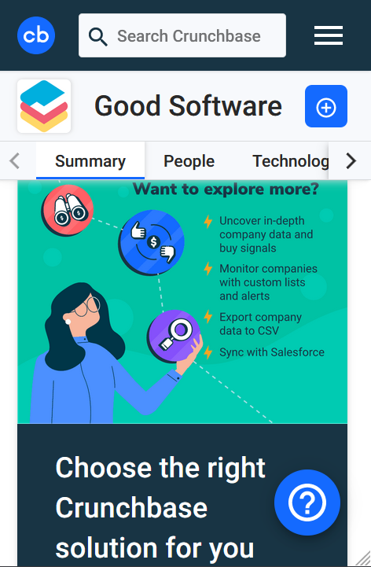
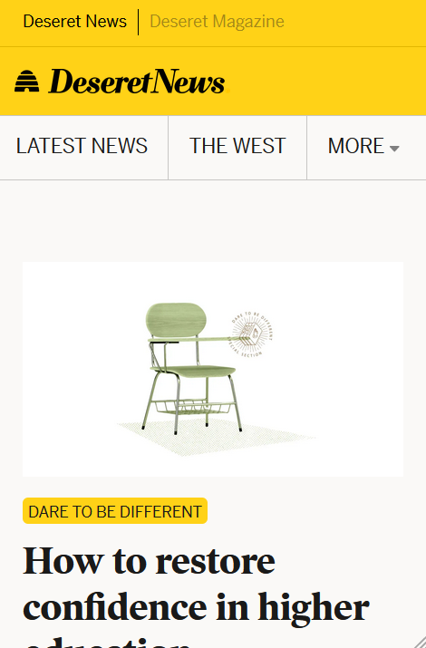

Fitt's Law
Code Mantor
codementor.ioFitts' law states that the amount of time required for a person to move a pointer (e.g., mouse cursor) to a target area is a function of the distance to the target divided by the size of the target. Thus, the longer the distance and the smaller the target's size, the longer it takes.
Visual Hierarchy
Crunch Base
crunchbase.com Visual Hierarchy is to organization of the design elements on the page so that the eye is guided to consume each design element in the order of intended importance.
PARC: Alignment
Deseret News
deseret.com Alignment allows an observer to read the image more easily and clearly. This is achieved by aligning objects to establish order and avoid haphazardly positioning items in the image.